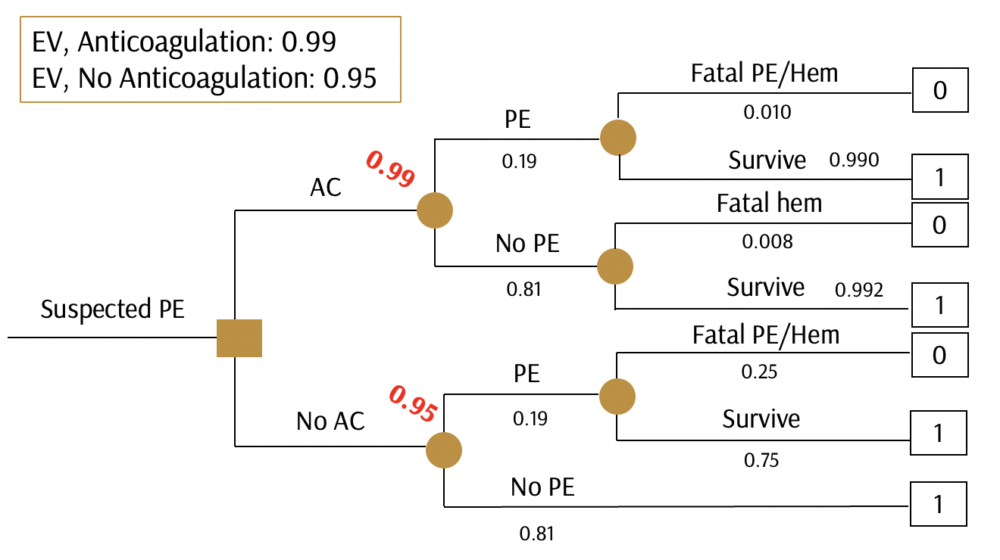
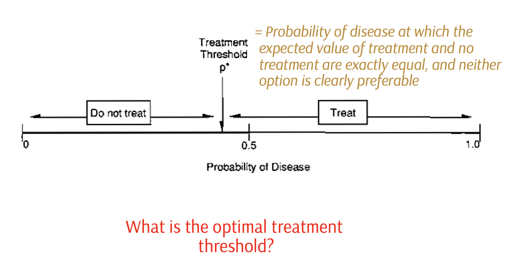
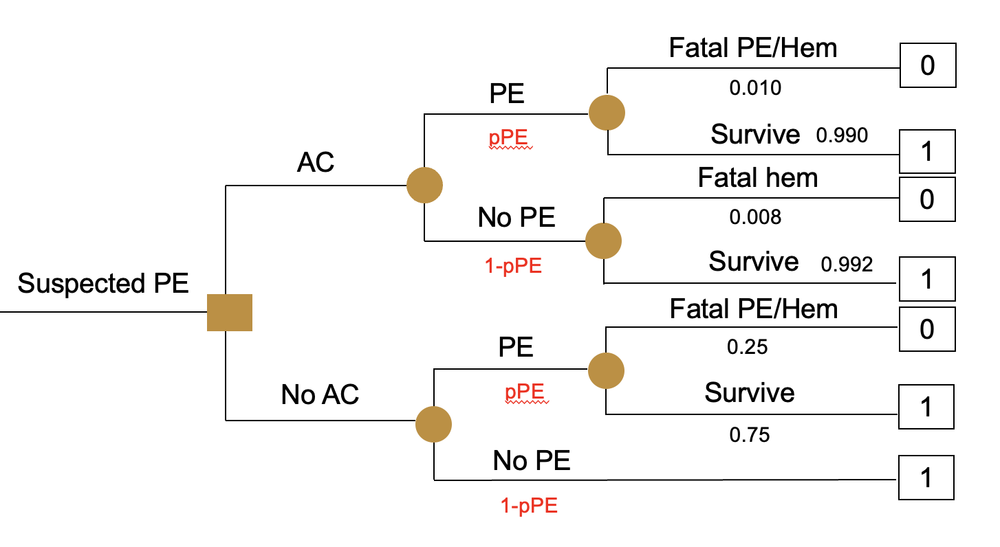
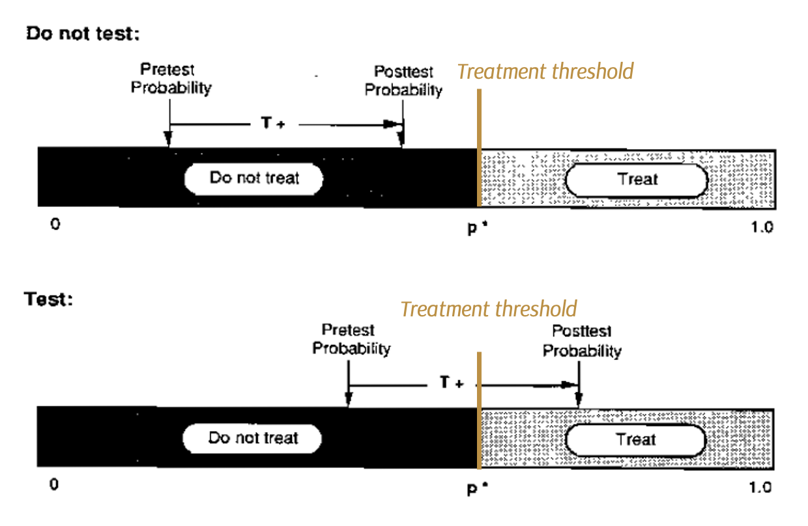
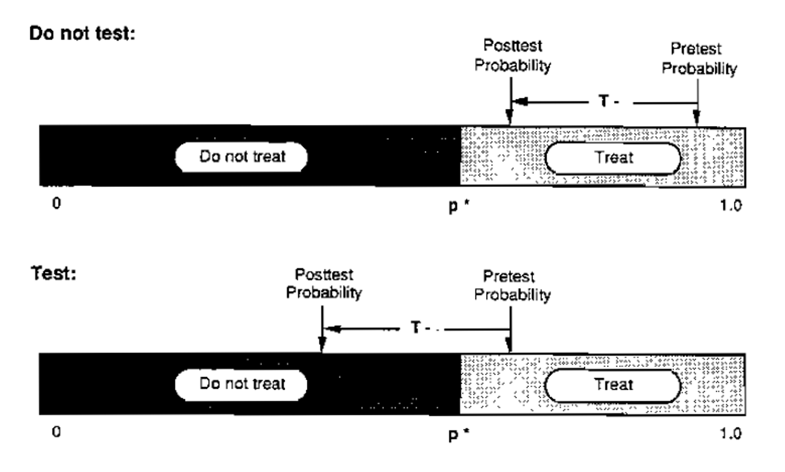
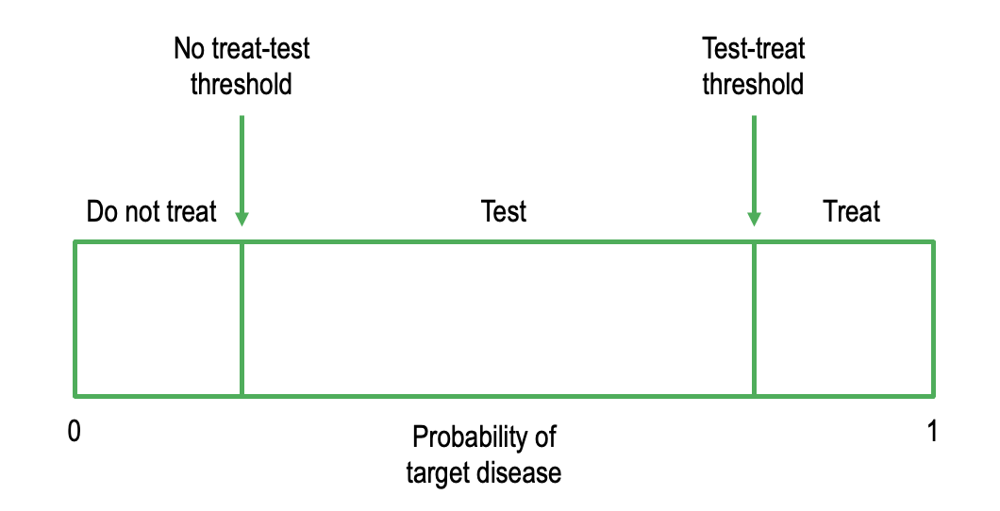
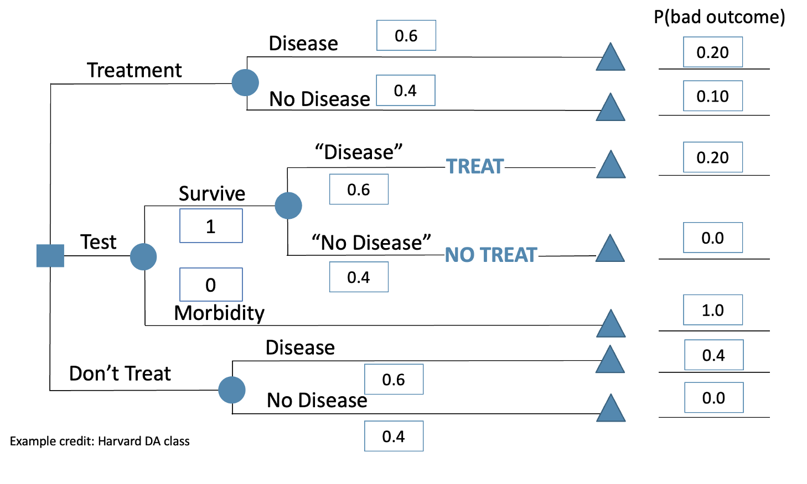
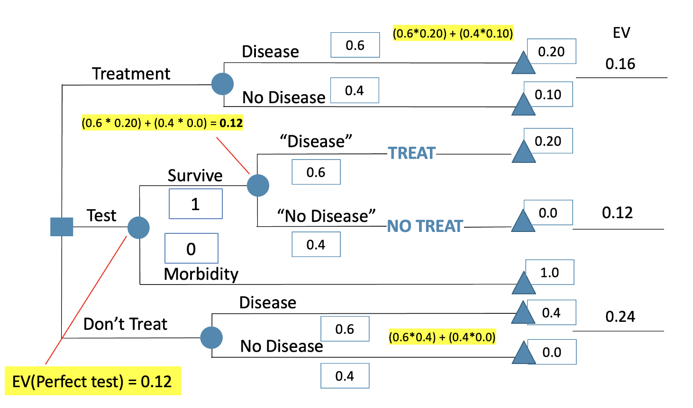
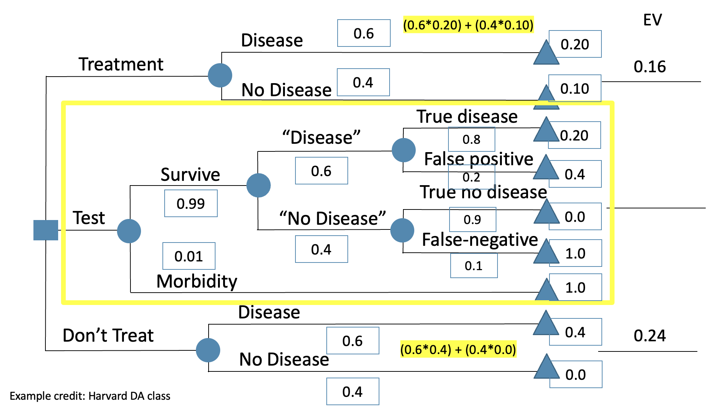
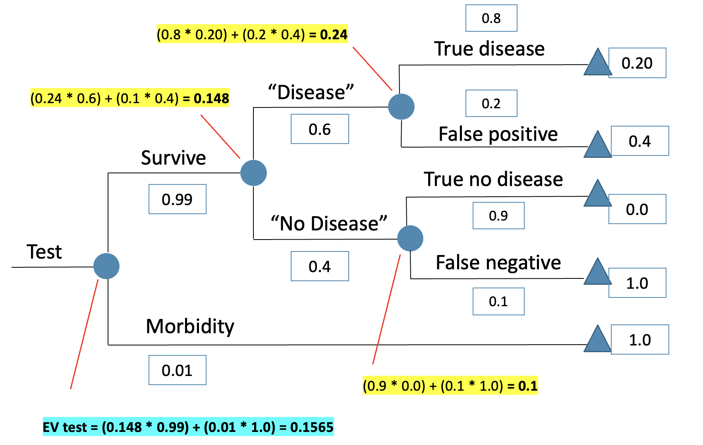

Treatment Thresholds & Value of Information
Learning Objectives and Outline
Learning Objectives
Define treatment thresholds within a decision tree & examine different ways of interpretation
Understand and calculate the value of information from a perfect vs. imperfect test
Outline
Treatment thresholds
Testing & Value of Information
Treatment thresholds
Treatment thresholds
Treatment thresholds
What if the probability of recurrent PE were higher or lower than initially estimated?
- Do we anticoagulate or not?
- At what point do we switch between “yes” versus “no”?
Treatment thresholds
Treatment thresholds
Perform a sensitivity analysis to find a treatment threshold
(More on sensitivity analyses later in the workshop)
Treatment thresholds
Expected value (AC) = 0.990 * pPE + 0.992 * (1-pPE)
Expected value (No AC) = 0.750 * pPE + 1.0 * (1-pPE)
NOW, SET EQUAL TO EACH OTHER, to solve for unknown threshold probability
Treatment thresholds
0.990 * pPE + 0.992 * (1-pPE) = 0.750 * pPE + 1.0 * (1-pPE)
0.240 * pPE = 0.008 * (1-pPE)
0.240 * pPE + 0.008 *pPE = 0.008
pPE = 0.008 / (0.240 + 0.008)
= .032
Treatment thresholds
Treatment thresholds
Treatment thresholds
Performing a test to gain additional information is ONLY worthwhile IF:
- At least one decision would change given some test results, and/or
- The risk to the patient associated with the test is less than the expected benefit gained from undergoing the test
Treatment thresholds
Treatment thresholds
Treatment thresholds
No Treat – Test Threshold
Probability of indifference between testing & not treating
Test – Treat Threshold
Probability of indifference between testing & treatment
Testing & expected value of information
- Information can theoretically be perfect, free, & without risk, but it’s usually NOT!
- Information is almost always IMPERFECT
- Getting information usually HAS A COST
Testing & expected value of information
Value of information asks: what are we gaining by having this extra information?
Value of information =
|[expected value from the ‘gaining information’ strategy] –
[expected value from the next best strategy]|
Testing & expected value of information
PERFECT tests give us an upper limit to the potential benefit from any test
The gain from such an imaginary PERFECT test is the expected value of perfect information (EVPI)
Testing & expected value of information
A perfect test (100% sens and spec) with no risk
A perfect test (100% sens and spec) with no risk

EV(perfect test) = 0.12
EV(treat strategy) = 0.16
EV(no treat strategy) = 0.24 (worst EV)
EVPI =
|EV ‘perfect test’ – EV ‘next best strategy: treat all’|
=|0.12 – 0.16| = 0.04,
or 4 deaths prevented per 100 tests because of the additional testing information
An imperfect test with morbidity risk
An imperfect test with morbidity risk
An imperfect test with morbidity risk
When the test is imperfect, testing is still the best strategy (in this case, the lower EV, the better since our outcome values are the probability of a bad outcome), but not by much:
Testing & expected value of information
When the test is IMPERFECT:
EV(test strategy) = 0.157
EV(treat strategy) = 0.16
EV(no treat strategy) = 0.24 (worst EV)
VOI = |EV ‘test’ – EV ‘next best strategy’|
= |0.157 – 0.16| = 0.003,
or 3 deaths prevented per 1000 tests because of the additional testing information